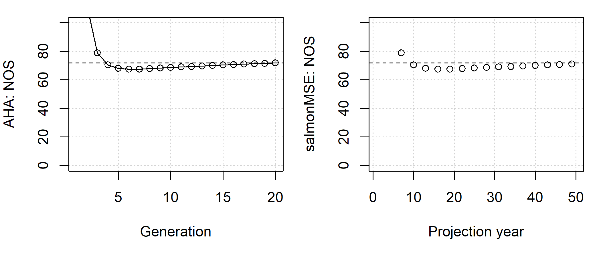

Here, we show a simple example of a salmon operating model where all fish mature at age 3 and follows the structure of an analysis done in AHA.
We create several S4 objects, the Bio object contains
the natural biological dynamics, including the maturity ogive
p_mature, fecundity, as well as the density-dependent
survival of smolts through the capacity and productivity parameters
(capacity_smolt and prod_smolt,
respectively).
library(salmonMSE)
class?SOM # Definition of inputs
Bio <- new(
"Bio",
nsim = 3,
maxage = 3,
p_mature = c(0, 0, 1),
capacity_smolt = 17250, # Beverton-Holt asymptote
prod_smolt = 300, # Equal to prod_adult/SAR
SAR = 0.01, # Future feature allows for time-varying SAR
fec = 5040, # Spawning fecundity of female NOS and HOS
p_female = 0.49 # Proportion female of spawners
)The next three objects control the management of the conservation unit through habitat, hatchery, and harvest options.
Let’s leave the habitat unchanged from the Bio
object:
Habitat <- new(
"Habitat",
capacity_smolt_improve = 1, # Keep carrying capacity unchanged
prod_smolt_improve = 1 # Keep productivity unchanged
)The hatchery dynamics are the most complex. We have a management target to release 2 million subyearlings.
After specifying the survival of broodtake and the eggs in the
hatchery, the model calculates the target broodtake. The natural
broodtake (NOB) is the product of the natural escapement and
ptarget_NOB, and capped at the product of natural
escapement and pmax_NOB.
The hatchery origin broodtake (HOB) is the difference between NOB and
target broodtake, and cannot exceed available broodtake, which is the
product of hatchery escapement and premove_HOS. The latter
is the proportion of hatchery origin escapement removed for hatchery or
research purposes, or to remove from the spawning grounds to ensure a
high proportion of natural spawners.
We also need to specify the relative fecundity of HOS compared to NOS, and the fitness dynamics.
Hatchery <- new(
"Hatchery",
n_yearling = 0, # Management lever. No hatchery if both this line and next line are zero
n_subyearling = 2e6, # Management lever. No hatchery if both this line and previous line are zero
s_prespawn = 1, # Survival prior to spawning
s_egg_smolt = 1e-6, # Survival of eggs in hatchery
s_egg_subyearling = 0.92,
gamma = 0.8,
pmax_NOB = 0.7,
ptarget_NOB = 0.51,
premove_HOS = 0.8,
theta = c(100, 80, 70),
rel_loss = c(0.5, 0.4, 0.1),
fec_brood = 5040,
fitness_type = "Ford",
pbar_start = c(93.1, 92),
fitness_variance = 10,
selection_strength = 3,
heritability = 0.5,
fitness_floor = 0.5
)We specify a harvest rate of 0.203 for the terminal fishery (mature component). No hatchery fish are marked.
Harvest <- new(
"Harvest",
u_preterminal = 0, # No fishery on juveniles
u_terminal = 0.203, # Specify fixed harvest rate of mature fish in the terminal fishery
m = 0 # Mark rate of hatchery releases (future feature)
)Now let’s stitch together the operating model and run the simulation for 50 years.
SOM <- new(
"SOM",
proyears = 50,
Bio, Habitat, Hatchery, Harvest
)
SMSE <- salmonMSE(SOM)With a simple salmon model, we can run AHA and compare the trajectory of the population.
AHA starts the projection with 1,000 NOS and HOS, while salmonMSE starts with the natural smolt production predicted by the intersection of the one-to-one line and the stock-recruit relationship, and no hatchery fish. Nevertheless, the number of NOS in both models stabilizes to the equilibrium value after approximately 15 generations (45 years).
SAHA <- AHA(SOM, ngen = 20)
# Compare NOS
SAHA$NOS
SMSE@NOS[, 1, ]